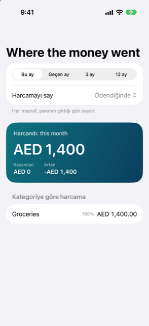

Kılavuz › Özet
Paranın gittiği yer
Bu ay ve geçen ay için kategoriye göre harcama.
Paranın gittiği yer, Damla'nın harcama raporudur. Seçtiğiniz aralıkta, aylara ve kategorilere göre ne harcadığınızı, ne kazandığınızı ve ne arttığını gösterir.

Ne zaman kullanılır
- Bu ayın en büyük maliyetlerini ve geçen ayla nasıl karşılaştıklarını görmek istiyorsunuz.
- Ağır mevsimleri fark etmek için bir yıllık harcamayı aylara göre görmek istiyorsunuz.
- Bir işlemi düzelttiniz ve raporlarınızın nasıl değiştiğini kontrol etmek istiyorsunuz.
- Tek ekranda, çıkanın yanı sıra gireni de görmek istiyorsunuz.
Adım adım
- Özet sekmesini açın (beş sekmenin dördüncüsü).
- Özet'in tepesindeki Paranın gittiği yer'e dokunun. Satır hâlihazırda bu ayın ve geçen ayın harcamasını gösterir.
- Tepeden bir aralık seçin: Bu ay, Geçen ay, 3 ay ya da 12 ay.
- Aralık altında, bir maliyetin hangi güne ait olacağını seçmek için Harcamayı say'ı kullanın.
- Büyük kartı okuyun: aralık için Harcanan, yanında Kazanılan ve Artan.
- Grafikler ve listeler için kaydırın; aşağıda anlatılıyor.
Harcama nasıl sayılır
Raporun tepesinde iki seçici durur: Aralık ve Harcamayı say.
Ödendiğinde, her maliyeti paranın çıktığı gün sayar. Kartla yapılan bir alışveriş, kartı kullandığınız gün sayılır; kart borcunu ödediğiniz gün değil. Bu, olanların alışılmış görünümüdür.
Geçerli olduğunda, yıllık ya da peşin ödenen maliyetleri kapsadıkları aylara yayar — kaydı ödemesini yaptığınız dönem olarak verdiğiniz aylar. Bir ayın ilk gününde başlayıp bir ayın son gününde biten dönem eşit parçalar hâlinde sayılır. Diğer dönemler, her ayın günleri oranında sayılır. Bu, ayları karşılaştırmak için alışılmış görünümdür; böylece sıra dışı bir ödeme bir aya hükmetmez.
Ekranda ne var
- Harcanan kartı: aralıkta harcanan toplam; yanında Kazanılan ve Artan (kazanılan eksi harcanan).
- Aylara göre: harcama çubuk grafiği, ay başına bir çubuk. Aralık, birden fazla ayda harcama ya da gelir tuttuğunda görünür.
- Bir halka grafiği: harcamanın kategorilere dağılımı, en büyük paylar önce. Birden fazla harcama kategorisi olduğunda görünür.
- Kategoriye göre harcama: her kategorinin toplamını ve harcama içindeki payını yüzde olarak listeleyen liste, en büyükten başlayarak. Alt kategorisi olan kategoriler parçalarını altında gösterir.
- Gelir: ne girildi, gelir kategorilerine göre. Bu bölüm yalnızca aralık gelir tuttuğunda görünür.
- Kimin için harcandı: başka bir kişi için harcama olarak kaydettiğiniz para, o kişiye göre listelenmiş. Bu bölüm yalnızca biri için harcama kaydettiğinizde görünür.
Dönemde hiçbir şey harcanmadıysa liste Bu dönemde harcama yok. der.
Tek seferde tek hesap
Aynı rapor tek bir hesap için de açılır. Hesaplar sekmesinde, kart gösteren bir hesap açın — bir banka, birikim, cüzdan, kredi kartı ya da kredi. Kartı çevirmek için dokunun, ardından arkasında Harcama'ya dokunun. Rapor artık yalnızca o hesaba dokunan kayıtları kapsar ve hesabın adı sayfa başlığıdır. Yatırımlar, aşamalı alışverişler ve kişiler kendi ekranlarını açar.
Bilmenizde fayda var
- Ayarlar'da Kategoriler altında kategori ekleyebilir, yeniden adlandırabilir ve kaldırabilirsiniz. Ekle'ye dokunun, bir kategoriye dokunun ve Ad'ı düzenleyin, ya da kaydırın ve Kaldır'a dokunun. Rapor değişikliklerinizi izler.
- Kartla yapılan alışverişler kartı kullandığınız gün sayılır; ekstre ödendiğinde değil. Kendi hesaplarınız arasında para taşımak asla harcama ve asla gelir değildir.
- Halka, en fazla en büyük sekiz kategoriyi çizer. Diğerleri yine de toplamlarda ve aşağıdaki listede görünür.
- Bu rapor, olanların kaydıdır. Ne harcanacağına dair tavsiye değil, bilgi verir.
İlgili
Anlaşılmayan ya da eksik bir şey mi var? support@raveniq.ai adresine yazın ve hangi sayfa olduğunu belirtin.